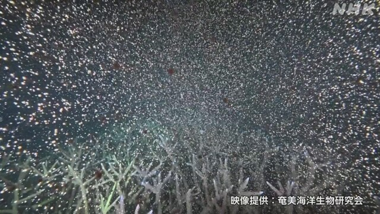

最新ニュース
1️⃣ アメリカとイラン 対立が続いている
アメリカとイランの間で、戦いを終わりにする話し合いが、うまく進んでいません。
アメリカのトランプ大統領は9日、SNSで、イランの軍の建物などを飛行機で攻撃したと書きました。理由は、ホルムズ海峡の近くでアメリカ軍のヘリコプターがイランの攻撃を受けたと聞いたからだと言っています。
イランの革命防衛隊は10日、アメリカが本当かどうかわからないことを理由にしてイランを攻撃したため、バーレーンにあるアメリカの軍の建物を攻撃したと言いました。イランのアラグチ外相はSNSに「私たちはどんな攻撃も許さない。アメリカは国に帰ったらいい」と書きました。
対立が続いています。
2️⃣ サグラダ・ファミリア教会のいちばん高い塔ができた
サグラダ・ファミリア教会は、スペインのバルセロナにある有名な教会です。建築家のアントニ・ガウディが計画して、140年以上、工事が続いています。
この教会で、計画した18の塔の中でいちばん高い「イエスの塔」ができました。高さが172mで、いちばん上に大きい十字架があります。
10日はガウディが亡くなってちょうど100年です。
この日の夜、ローマ教皇が記念のミサをします。スペイン国王など4000人以上が出席します。
教会の工事はこのあとも続いて、全部ができるまでにあと10年ぐらいかかる予定です。
3️⃣ JR東日本 来年の春から切符を新しくする
JR東日本は、来年の春から切符を新しくすると言いました。
新しい切符は、「QRコード」という白と黒の模様が書いてあります。今より少し大きくなります。
電車に乗る人は、今まで改札の機械に切符を入れて通りましたが、新しい切符はQRコードを機械に見せて通ります。
切符を変える理由は、今の切符は金属が入っていてリサイクルが難しいことや切符を使う人が少なくなったためです。
4️⃣ 鹿児島県 奄美大島の海 さんごがたくさんの卵を産んだ

鹿児島県の奄美大島で、さんごがたくさんの卵を産みました。
海の生き物を研究している興克樹さんが今月4日の夜、カメラで撮りました。
場所は深さ4mぐらいの海です。さんごから0.5mmぐらいの小さい球が、たくさん海の中に出てきました。球は、薄いピンク色で、中に卵と精子が入っています。
赤ちゃんになるとしばらく海の中にいます。そして岩に付いて大きくなります。
興さんは「命の力を感じて感動しました」と話しました。
- 〜ている / 〜でいる
- 〜など
- 〜から
- 〜ため
- 〜こと
- 〜以上
- 〜中
- 〜がある / 〜がいる
- 〜後 / 〜あと
- 〜予定
- 〜まで
- 〜くらい / 〜ぐらい
- 〜までに
- 〜予定だ
- 〜という
- 〜より
- 〜になる
vebaev.github.io
Generated: 2026-06-10 14:24:01 UTC